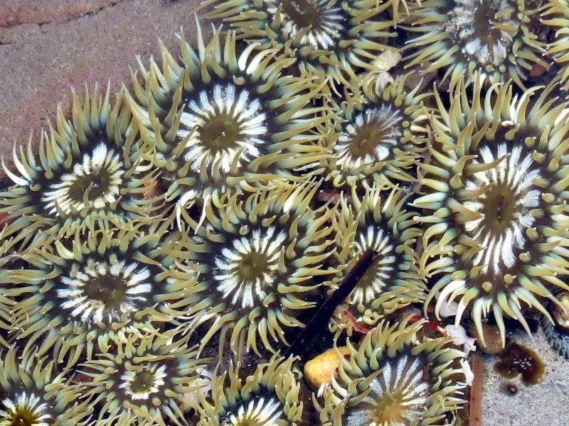

其他无脊椎动物 · 动物界
黄海葵 Anthopleura elegantissima

体柱黄绿、触手带粉紫色尖端的中小型海葵，栖于北美太平洋岸潮间带，无性克隆成群，覆盖大片岩石。
- 分类
- 门刺胞动物门纲珊瑚纲目海葵目科海葵科属侧花海葵属
- 栖息环境
- 潮间带岩石海岸，附着于岩面与石缝
- 地理分布
- 北美太平洋沿岸，自阿拉斯加至加利福尼亚
- 保护级别
- 常见种，无保护级别
物种志
黄海葵的体柱高约三至五厘米，直径约两厘米，体柱呈黄绿至橄榄绿色，表面常粘着沙粒和碎屑。口盘周围有数十至上百枚细长触手，触手呈淡黄绿色，尖端带粉紫或淡红色。它靠基盘附着在岩石上，能缓慢移动，遇敌时收缩成小球，把触手完全藏进体内。
它分布于北美太平洋沿岸，从阿拉斯加至加利福尼亚的潮间带岩石海岸，成群聚集，覆盖大片岩面。它通过纵裂进行无性繁殖，克隆个体彼此相邻，不同克隆相遇时会用特殊的触手互相攻击，在岩面上形成清晰的边界。它与虫黄藻共生，也捕食小动物。退潮时它收缩身体减少失水，涨潮时展开触手取食。
形态与习性
- 体柱高约三至五厘米，黄绿至橄榄绿
- 触手数十至上百枚，尖端粉紫或淡红
- 繁殖纵裂进行无性繁殖，形成克隆群
- 克隆冲突不同克隆间以特殊触手互相攻击
- 共生与虫黄藻共生，兼捕小动物
- 潮汐适应退潮收缩减少失水，涨潮展开取食
趣味知识
- 同一片岩石上的海葵可能全是同一个体的克隆，彼此紧挨着。
- 两个不同克隆的边界上，触手会互相攻击，留下一条无葵的界线。
- 退潮时它缩成一颗绿球，把水分锁在体腔里熬到下一次涨潮。